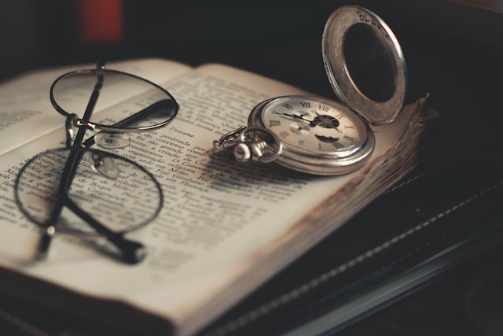

-
1. Estimula a criatividade
A leitura é um hábito enriquecedor que traz uma série de benefícios e aprimora diversas habilidades do leitor, e uma delas é a criatividade. As histórias apresentadas nos livros exploram diferentes cenários. Dependendo do estilo do autor, os ambientes, personagens e objetos são descritos com riqueza de detalhes.
Para entrar nesse outro universo, o leitor precisa criar as imagens e as cenas em sua mente e se conectar com a narrativa. Quanto mais produtiva for a sua imaginação, melhor será a experiência da leitura.
Nesse caso, a criatividade traz um pouco de individualidade. Isso porque, os cenários que você constrói na sua mente se referem ao seu próprio mundo interior, ou seja, cada leitor imagina a história à sua maneira.
-
2. Exercita o cérebro
Que o hábito de ler promove crescimento intelectual, você já sabe, mas as investigações no campo da Neurologia trazem explicações precisas para isso. Enquanto o indivíduo lê, ele realiza uma quantidade maior de sinapses — conexões neurais. Isso significa que a leitura é como uma ginástica para o cérebro. Com isso, diversas funções cerebrais são favorecidas.
Há, inclusive, estudos que analisam a relação entre a prática frequente da leitura e a prevenção de doenças degenerativas, como o Alzheimer. Pesquisas ainda são feitas na área, mas a hipótese é de que o declínio que ocorre no cérebro com o avanço da idade pode ser reduzido à medida que a mente é exercitada — e isso ocorre com quem lê habitualmente.
-
3. Melhora a concentração e a memorização
Acabamos de falar sobre os efeitos da leitura na saúde do cérebro. Funções cognitivas, como memória e concentração, também são bastante trabalhadas enquanto lemos. Ler é um excelente treino de atenção e um recurso eficaz para aprender a se concentrar. Especialmente quando você lê em ambientes mais movimentados, onde é preciso se esforçar para manter o foco sem se distrair com os estímulos externos.
Da mesma forma, quem lê com frequência consegue memorizar informações com mais facilidade, porque essa função é constantemente treinada quando acompanhamos um livro. Ao longo da história, você absorve novos dados — nomes de personagens, detalhes dos ambientes etc. — e precisa resgatá-los nos capítulos seguintes.
Justamente por estimular essas funções cognitivas é que a leitura também facilita a aquisição de novas linguagens, ou seja, os leitores assíduos podem demonstrar maior aptidão para aprender outros idiomas.
-
4. Amplia o vocabulário e os conhecimentos gerais
Ao ler um livro, você se depara com inúmeras palavras novas, algumas até bastante requintadas e pouco utilizadas no dia a dia, dependendo do estilo literário. A ampliação do vocabulário é útil também na hora de construir redações bem elaboradas.
Além do repertório verbal, o leitor expande o seu conhecimento geral. Nos livros, você sempre terá acesso a novas informações sobre lugares do mundo, períodos históricos, diferentes culturas e muito mais. É indiscutível o aprendizado adquirido por meio da leitura.

-
5. Desenvolve o encadeamento de ideias e as habilidades de escrita
Já ouviu falar que quanto mais a pessoa lê, melhor ela escreve? Isso é fato! As duas ações estão sempre relacionadas. Interpretar dados e fatos, organizar o pensamento, formular sínteses e encadear ideias são habilidades importantes que se desenvolvem com o hábito da leitura e que, por consequência, aprimoram a escrita.
Você também pode aperfeiçoar o seu estilo conforme o tipo de livros que lê. Quando nos identificamos com a escrita de determinado autor, temos a propensão de “herdar” um pouco do tom que ele utiliza em seus textos. Isso ocorre de forma quase automática, isto é, enquanto escrevemos, nossa mente pode evocar esse modelo.

-
6. Desperta o senso crítico e a flexibilidade analítica
“Quem não lê, é obrigado a acreditar em tudo aquilo que lhe dizem”. Você, possivelmente, já viu uma frase semelhante a essa, não é mesmo? Isso também nos leva ao Mito da Caverna, de Platão — uma das mais importantes passagens da Filosofia — que, em resumo, fala sobre a importância de buscar o conhecimento muito além daquilo que nos é apresentado.
Ainda hoje, milhares de anos depois da era de Platão, nos deparamos com situações semelhantes. As pessoas têm total acesso às fontes seguras de notícias e, mesmo assim, acreditam facilmente em qualquer informação que chega até elas. Mais do que isso, não se certificam da veracidade dos fatos e divulgam os dados sem fundamento, dando força a uma corrente de desconhecimento.
A leitura, portanto, tira o indivíduo desse ciclo de senso comum e posicionamentos automáticos e permite que ele tenha um olhar crítico sobre os fatos. Isso ajuda a observar a situação por diferentes prismas e assumir uma postura mais questionadora.

-
7. Transporta o leitor para outro universo
Por fim, a leitura entretém, ajuda a se distrair, relaxar e aliviar o estresse. O leitor tira o foco das tensões e dos problemas do dia a dia e abre as portas de um mundo paralelo, totalmente distante da sua realidade. Os personagens ganham vida e os cenários se desenham na mente de quem lê, dando início a uma jornada rica, na qual até as emoções afloram como se fossem experiências reais.
De todos os benefícios da leitura, o mais incrível é o diálogo que se constrói entre dois mundos: aquele apresentado nos livros e o que está dentro de cada pessoa. A partir desse encontro de ideias e sensações, é possível aprender a olhar a vida por outros ângulos. Ler é um hábito que abre a mente e pode tornar o leitor uma pessoa melhor!
Interessante o quanto a leitura pode facilitar o nosso desenvolvimento, não é mesmo? E que tal você levar conhecimento para outras pessoas e incentivar esse bom hábito? Então, aproveite para compartilhar este post nas suas redes sociais!